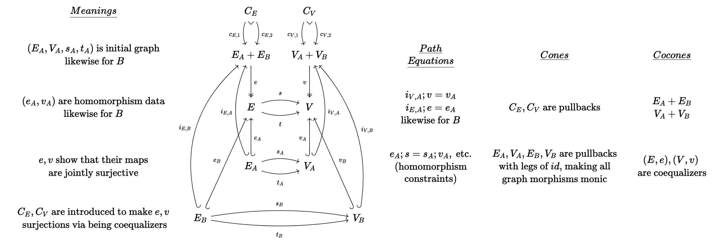
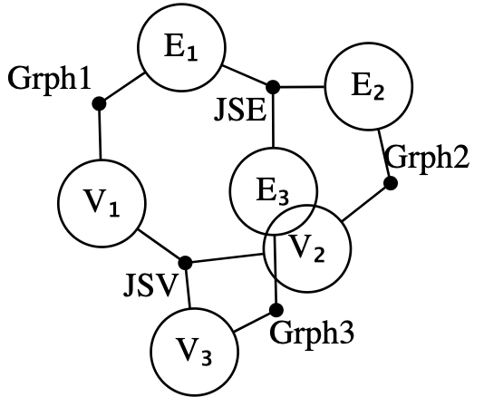
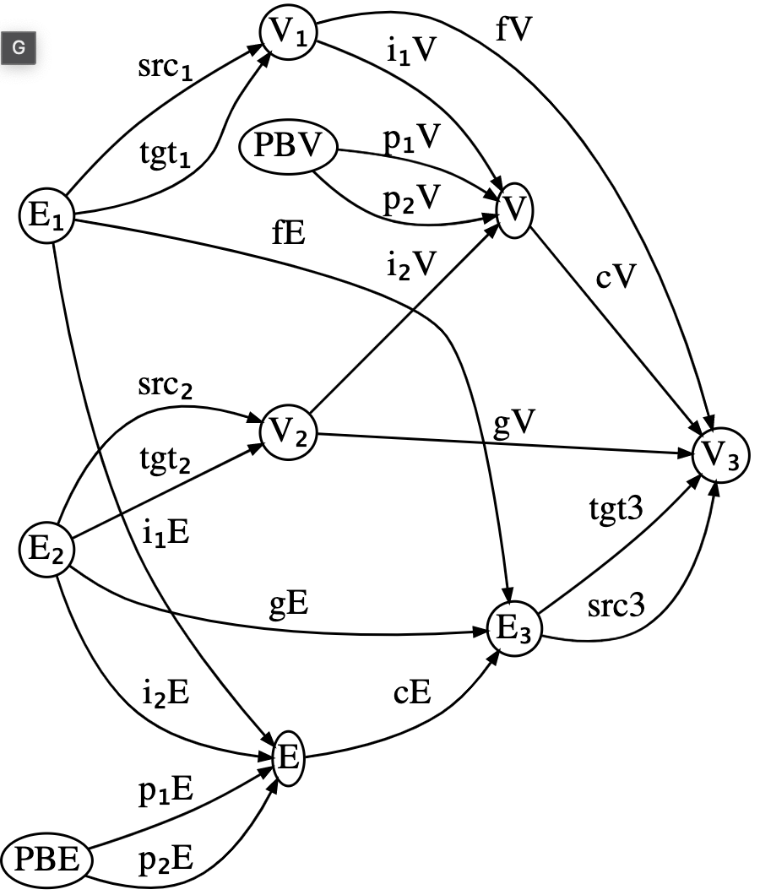

CombinatorialEnumeration.jl
Motivating example
Suppose you are given a formally specified theory, for example the theory of (small) categories, which says that a category C is specified by:
- A set of objects,
Ob(C) - For each pair of objects
a,b ∈ Ob(C), a set of arrowsHom(a,b). - A composition operator that gives an arrow in
f⋅g ∈ Hom(a,c)for each pair of arrowsf ∈ Hom(a,b)andg ∈ Hom(b,c). - An identity arrow
id(a) ∈ Hom(a,a)for each objecta ∈ Ob(C) - Furthermore, this data must satisfy some constraints:
- Unitality:
id(a)⋅f = f = f⋅id(b)for eachf ∈ Hom(a,b) - Associativity:
(f⋅g)⋅h = f⋅(g⋅h)for each triple of composable arrows.
- Unitality:
Even if each individual piece of data or constraint in this definition is straightforward, definitions might seem overwhelming at first insofar as we come across the following types of problems:
- What are the 5 simplest categories?
- Given this proposed category, is it actually a category?
- Are there any categories (bounded by some max size) such that some property
ϕholds?
There is pedagogical value in working through these types of problems in one's head, but there is also value in having these answers automatically ready at hand when trying to think about / build intuition for more complicated concepts. There is something mechanical about this process, and the purpose of this repo is to mechanize precisely that in an efficient way that's also usable for people trying to build their intuitions.
Motivation
There are lots of constraint solvers which can find models. For example, SMT can generate a model M (or tell you one doesn't exist), and then you can add another axiom to rule out M and try again until you've enumerated all models. While SMT's first-order logic is an appealing modeling language due to its flexibility (usually, one can encode easily one's domain in this universal language), it's a bit awkward to detail with certain types of data. In particular, combinatorial data (here, meaning collections of finite sets with finite maps between them that satisfy certain properties, e.g. bipartite graphs).
This repo explores another corner of the design space, motivated by the idea of sketches from category theory. These have been argued to be a good framework for knowledge management because the category theory behind sketches allows to automatically reason about the relationships between different pieces of knowledge without requiring reasoning about arbitrary first-order logic, which is notoriously difficult.
Sketch-constraint solving is like a subset of general constraint programming because there are only a few special types of constraints that need be enforced. The downside is that may have to think how to represent their domain as a sketch, rather than using arbitrary first-order logic or code. There are at least a few upsides:
- the solver has potential to be very efficient for the few types of constraints sketches require reasoning about combinatorial data, rather than logical formulas, allows us to work up to isomorphism incrementally throughout the entire model exploration process, rather than quotienting our results at the end.
- Sketches can be constructed compositionally, and, moreover, there are clean relationships between
Mod(A+B)(i.e. the models of some sketch that is related in some way toAandB) toMod(A)andMod(B).
Models
For our purposes, a model is an instance of a relational database, i.e. a collection of tables with foreign keys between them. Normally, one can stick whatever data one wants into the tables of a database. Suppose our schema is E⇉V. If we enumerate models on this schema, we will obtain all directed multi-graphs. Here are the first few:
[todo]
However, we might wish to enumerate the smallest groups:
[todo]
There is no correspondence between groups and databases. At best, every group can be represented by a certain database instance, but only a very select few database instances on that schema are actually groups. If we tried to enumerate the databases that might be groups of order 10 and then filter those which are actually groups, we would have to enumerate 10^... This isn't feasible, so we need to incorporate our constraints into the search process. The language of finite limit sketches allows us to say how we wish to restrict which databases are valid models.
Finite (co)limit sketches
A sketch contains a schema, just like a relational database. However, it contains three kinds of extra data which constrain models.
Path Equations
We can assert that sequences of foreign keys in a database must yield the same result. An example of this is the case of reflexive graphs.
We add to our schema a designated refl edge for each vertex. The equalities:
refl; src = idᵥrefl; tgt = idᵥ
Capture the fact that a database with a vertex whose reflexive edge starts or ends at a different vertex is not a valid model.
Cone objects
A sketch can designated a particular object to satisfy the cone constraint. This constraint says that the elements of that table are in bijection with matches of some pattern found elsewhere in the database. A pullback is the classic example of this: we want to identify pairs that agree on a certain value. For example, a database might have:
[CTS type example]
To enforce that the _ table actually contains the intended content, we assert it is in bijection with the following pattern.
[todo]
There are many more examples that can show off the versatility of cone constraints.
Cocone objects
The last type of constraint available is that of cocones. A cocone object is asserted to be in bijection with certain equivalence classes (i.e. partitions, quotients) of the objects in a diagram. A pushout is the classic example of this: we wish to glue together two tables in our database along a common boundary.
[example]
Compositionality
This peculiar language of constraints has an advantage that comes from the fact that sketches can be related to each other (there is a category of sketches). This means that, for example, gluing sketches together can be a meaningful operation - if we have computed the models for the individual components, then a very efficient operation can construct the composite models, rather than starting from scratch. Below we work through an extended example involving a sketch whose models are ways two graphs can overlap.
Construction of sketches via colimits
The following sketch is quite large, although it can be described simply as depicting pair of monic graph morphisms that are jointly surjective onto a third graph.

If we manually create this from scratch, the code might look like below (full source code here).
We first write out the schema:
schema = @acset LG begin
V=10; E=20; vlabel=[:V₁,:V₂,:V₃,:V₁_V₂,:PBᵥ,:E₁,:E₂,:E₃,:E₁_E₂,:PBₑ];
elabel=[:fᵥ,:gᵥ,:iᵥ₁,:iᵥ₂,:pᵥ₁,:pᵥ₂,:fᵥ_gᵥ,
:fₑ,:gₑ,:iₑ₁,:iₑ₂,:pₑ₁,:pₑ₂,:fₑ_gₑ,
:s₁,:t₁,:s₂,:t₂,:s₃,:t₃];
src=[1,2,1,2,5,5,4, 6,7,6,7,10,10,9, 6,6,7,7,8,8];
tgt=[3,3,4,4,4,4,3, 8,8,9,9,9, 9, 8, 1,1,2,2,3,3]
endWe then define all of the cones/cocones, which could be done with a lot of tedious boilerplate. Alternatively, we use for loops and a lot of hacking together Strings to do it somewhat concisely, at the expense of readability:
"""PB is a pullback: all pairs of A+B that agree on their value in c"""
cs = map([:V=>:ᵥ,:E=>:ₑ]) do (x,y)
vlabel = Symbol.([fill("$(x)₁_$(x)₂",2)...,"$(x)₃"])
elabel = Symbol.(fill("f$(y)_g$y" ,2))
lgs = [1=>Symbol("p$(y)₁"),2=>Symbol("p$(y)₂")]
g = @acset(LG, begin V=3;E=2; vlabel=vlabel; elabel=elabel;
src=[1,2]; tgt=3 end,)
Cone(g, Symbol("PB$y"), lgs)
end
"""(C,c) is the coequalizer of PB's legs"""
ccs = map([:V=>:ᵥ,:E=>:ₑ]) do (x,y)
vlabel = Symbol.(["PB$y",fill("$(x)₁_$(x)₂", 2)...])
elabel = Symbol.(["p$(y)₁", "p$(y)₂"])
lgs = [i=>Symbol("f$(y)_g$y") for i in [2,3]]
g = @acset(LG, begin V=3;E=2;vlabel=vlabel; elabel=elabel;
src=1; tgt=2 end)
Cone(g, Symbol("$(x)₃"), lgs)
end
"""A_B is the coproduct A+B"""
a_bs = map([:V=>:ᵥ,:E=>:ₑ]) do (x,y)
vlabel = Symbol.(["$(x)₁", "$(x)₂"])
ap = Symbol("$(x)₁_$(x)₂")
lgs = [1=>Symbol("i$(y)₁"),2=>Symbol("i$(y)₂")]
Cone(@acset(LG, begin V=2;vlabel=vlabel end), ap, lgs)
end
"""Make a morphism injective"""
mk_inj(s,t,f) = Cone(@acset(LG, begin V=3;E=2;vlabel=[s,s,t];
elabel=[f,f];src=[1,2]; tgt=3 end,), s, [1=>add_id(s),2=>add_id(s)])
injs = [mk_inj(x...) for x in
[(:V₁,:V₃,:fᵥ),(:V₂,:V₃,:gᵥ),(:E₁,:E₃,:fₑ),(:E₂,:E₃,:gₑ)]]There is also the specification of path equalities which we omit here.
The above approach could be simplified if one has already implemented a sketch for jointly surjective functions. Combined with a sketch for graphs (which can be produced via Grph = Sketch(SchGraph) as the schema for graphs is already provided by Catlab), we can express our sketch as the gluing together of five sketches: two copies of JointSurj and three copies of Grph. We start this by declaring a composition pattern, given by an undirected wiring diagram which can be generated via the @relation macro.
r = @relation () begin
V₁(JSV, Grph1); V₂(JSV, Grph2); V₃(JSV, Grph3)
E₁(JSE, Grph1); E₂(JSE, Grph2); E₃(JSE, Grph3)
end;
We can see that Grph1 relates E1 and V1, while a JointSurj (interpreted as applicable to sets of edges) named JSE connects all three edge sets. We compute our composite sketch by assigning a sketch to each black junction and assigning data which indicates overlaps between the sketches in the open circles.
res = overlap(r,
# fill junctions with sketches
(Grph1 = Grph, Grph2 = Grph, Grph3 = Grph, JSV = JointSurj, JSE = JointSurj),
# fill circles with overlap criteria
(V₁=[(:V₁=>(Grph1=:V, JSV=:A))],
V₂=[(:V₂=>(Grph2=:V, JSV=:B))],
V₃=[(:V₃=>(Grph3=:V, JSV=:C))],
E₁=[(:E₁=>(Grph1=:E, JSE=:A))],
E₂=[(:E₂=>(Grph2=:E, JSE=:B))],
E₃=[(:E₃=>(Grph3=:E, JSE=:C))])) |> apex;Some of the autogenerated names may be verbose, so we can apply regexes to trim those down.
res2 = rename(res, Dict(
r"_Grph"=>"", r"_Grph"=>"", r"_Coprod"=>"","1"=>"₁","2"=>"₂","iA"=>"i₁",
"iB"=>"i₂","_JS"=>"")) |> codom
Almost all of the data of the sketch is there - all that is missing are the subset of equations that involve communication between the different building blocks we glued together. These can be added afterwards.
If we happen to not have jointly surjective maps defined for us already, we can construct the sketch using the simpler building blocks of graphs, monos, epis, and coproducts. This requires a more involved assembly process, however.
r = @relation () begin
V₁(Grph1, MonoV1, CoprodV)
V₂(Grph2, MonoV2, CoprodV)
E₁(Grph1, MonoE1, CoprodE)
E₂(Grph2, MonoE2, CoprodE)
V₁V₂(CoprodV, SurjV)
E₁E₂(CoprodE, SurjE)
V₃(MonoV1, MonoV2, SurjV, Grph3)
E₃(MonoE1, MonoE2, SurjE, Grph3)
end;
res = overlap(r,
# fill junctions with sketches
(Grph1 = Grph, Grph2 = Grph, Grph3 = Grph,
CoprodV = Coprod, CoprodE = Coprod,
SurjV = Surj, SurjE = Surj,
MonoV1 = Inj, MonoV2 = Inj, MonoE1 = Inj, MonoE2 = Inj),
# fill circles with overlap criteria
(V₁=[(:V₁=>(Grph1=:V,MonoV1=:A, CoprodV=:A))],
V₂=[(:V₂=>(Grph2=:V,MonoV2=:A, CoprodV=:B))],
E₁=[(:E₁=>(Grph1=:E, MonoE1=:A, CoprodE=:A))],
E₂=[(:E₂=>(Grph2=:E, MonoE2=:A, CoprodE=:B))],
V₁V₂=[(:V₁V₂=>(CoprodV=:A_B, SurjV=:A))],
E₁E₂=[(:E₁E₂=>(CoprodE=:A_B, SurjE=:A))],
V₃=[(:V₃=>(MonoV1=:B, MonoV2=:B, SurjV=:B, Grph3=:V))],
E₃=[(:E₃=>(MonoE1=:B, MonoE2=:B, SurjE=:B, Grph3=:E))])) |> apex;As a final throught here, the entire sketch might be conceived as a product of Grph and JointSurj. Implementing limits of sketches is much more challenging than colimits, so this feature may take a while before it is ready.
Aside: Notes on categories of sketch models
Just for reference, from "Toposes, Triples and Theories" (Barr and Wells)
- Theorem 4.3: Every FP-theory has an extension to an LE-theory which has the same models in any LE-category.
- Theorem 4.4 : The category of set-valued models of a left exact theory has arbitrary limits and all filtered colimits; moreover, these are preserved by the set-valued functors of evaluation at the objects of the theory.
- Theorem 4.1: (outlines which kinds of sketches have which kinds of (co)limits)